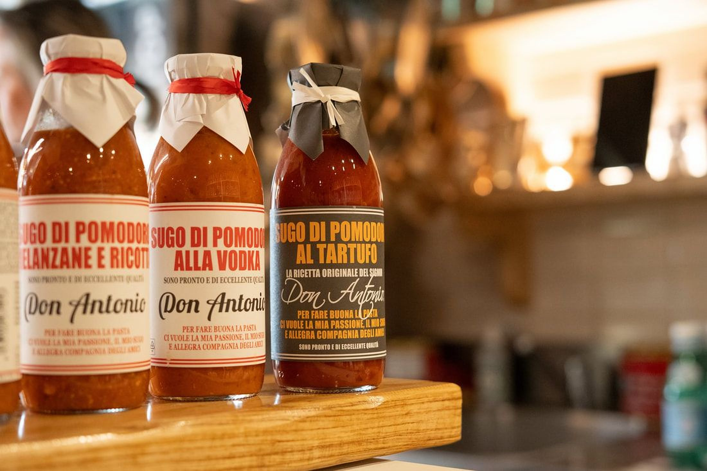
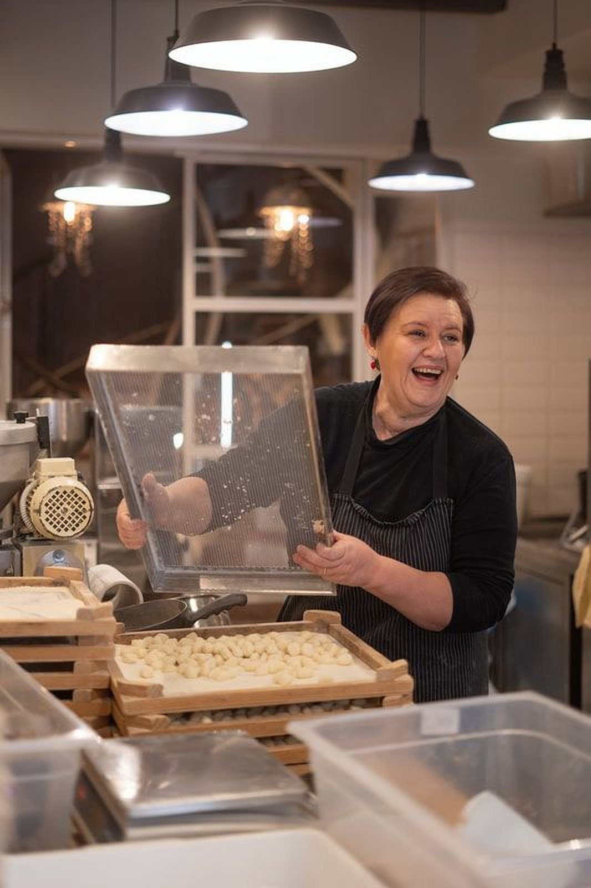
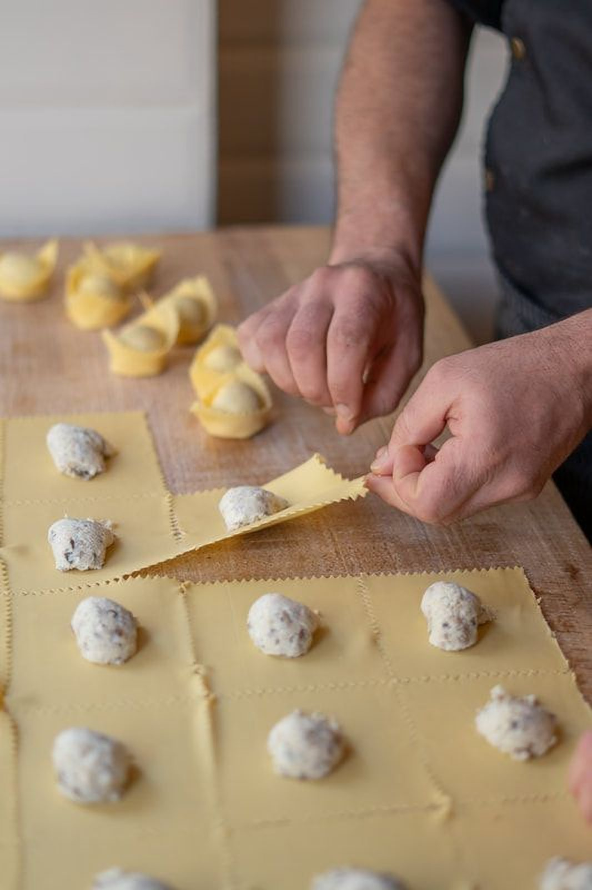

Tortellini
Il cuore della bottega: ripieni classici e stagionali, piegati uno a uno a mano.

Verona · Pasta fresca ogni giorno
Tortellini, tortelloni e tagliatelle fatti a mano ogni giorno, con la stessa passione di una domenica in famiglia.


La nostra storia
La pasta fresca è tradizione, passione, gusto. È il ricordo della domenica, è celebrazione dello stare insieme.
Ecco perché abbiamo deciso di offrirvi tante bontà preparate fresche ogni giorno: per regalare gioia, un tortellone dopo l'altro. Tutti i giorni prepariamo tortelloni, tortellini, tagliatelle, gnocchi e tutto quello che la fantasia e gli ingredienti di stagione ci ispirano.
Pasta quando vuoi
Ogni giorno in laboratorio: le nostre specialità, sempre fresche e pronte da cucinare in pochi minuti.
Il cuore della bottega: ripieni classici e stagionali, piegati uno a uno a mano.

Formato generoso, ripieni ricchi: la pasta della domenica tutti i giorni della settimana.

Tirate a mano ogni mattina, pronte per il vostro sugo preferito.

Morbidi, leggeri, preparati con patate selezionate ogni giorno.

Proposte stagionali che nascono dalla fantasia della bottega e dagli ingredienti del momento.

Uno sguardo in bottega
Vieni a trovarci
Via Abramo Massalongo 5/a
37121 Verona (VR)
Martedì → Domenica
10:00 – 21:30
Lunedì chiuso